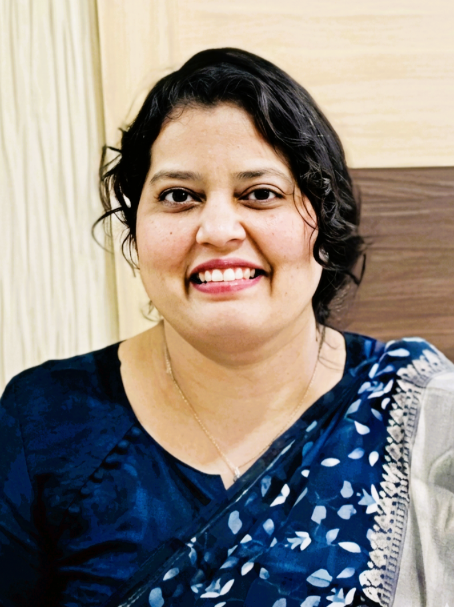
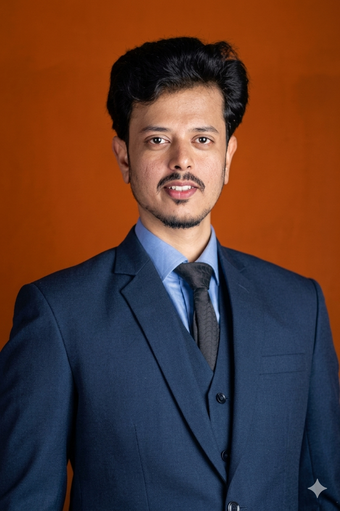
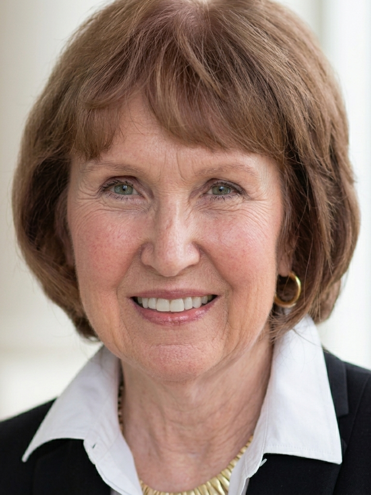
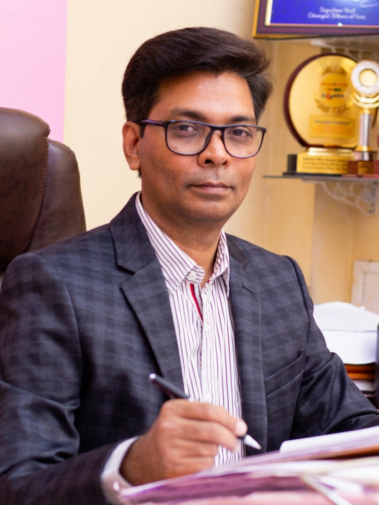
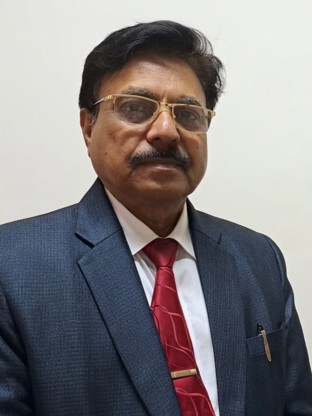
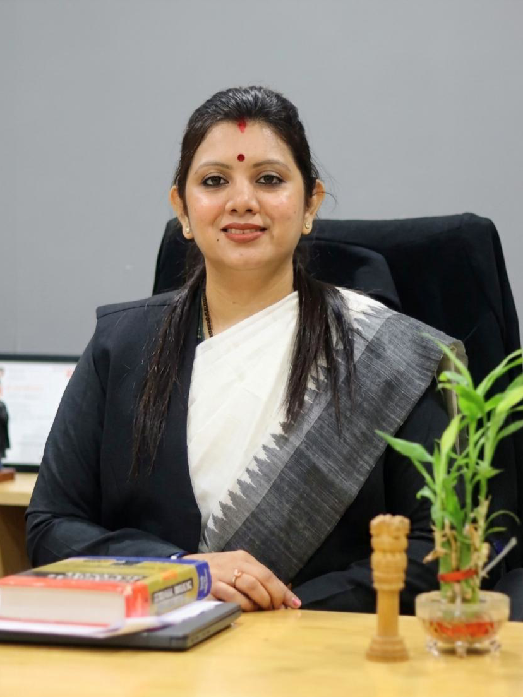
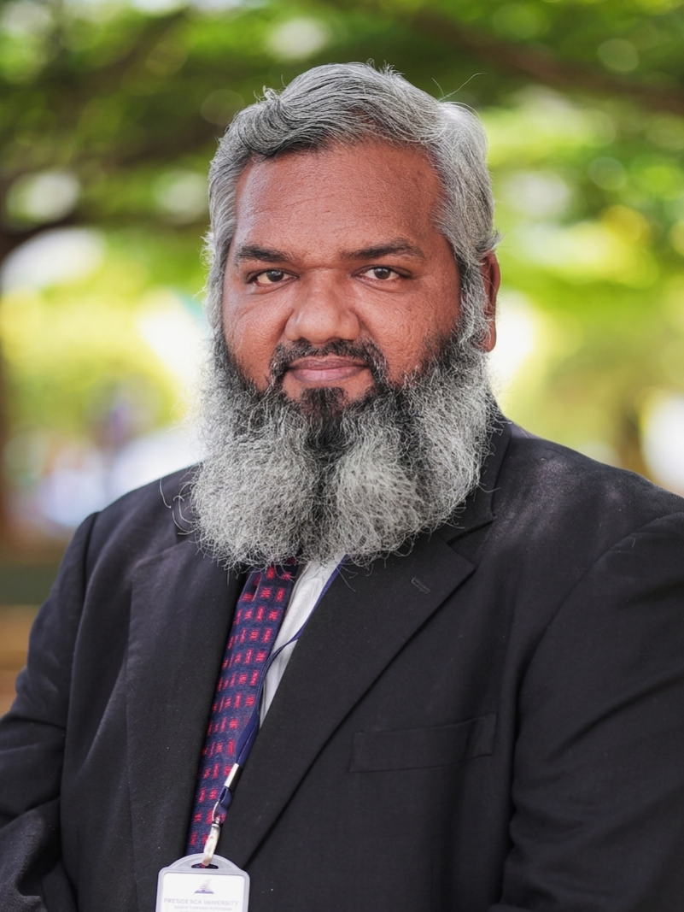

Meet the Minds Behind IJMEER
Detailed biographies, achievements, and expertise profiles of the distinguished scholars, legal experts, and multidisciplinary practitioners who guide IJMEER's academic vision.

Dr. Nusrat Ali Hashmi
Research Papers
Books Authored
Yrs Experience
Dr. Nusrat Ali Hashmi is a distinguished legal scholar, Senior High Court Advocate, and Editor-in-Chief of the International Journal of Multidisciplinary Explication and Emerging Research (IJMEER). Holding a Doctor of Philosophy (Ph.D.) in Law, she represents the gold standard of integrated legal professionalism — where scholarship informs practice, teaching shapes advocacy, and institutional leadership creates pathways for others to flourish.
Dr. Hashmi's academic pedigree includes a professorship at Government Law College, Mumbai — founded in 1855 and recognized as the oldest law school in Asia — a distinction that speaks to her extraordinary scholarly standing. She served as Principal at two institutions: the Shivajirao S. Jondhle Institute of Law and Research in Mumbai and Oriental College of Law, where she led curriculum design, faculty management, moot court programs, and academic event organization. She also served as Head of Department at both MATS University and ITM University, and as Assistant Professor and Guest Faculty at numerous leading law colleges across India.
As Editor-in-Chief of IJMEER, Dr. Hashmi oversees the entire publication pipeline — ensuring academic rigor in peer review, maintaining high editorial standards, and steering the journal's scholarly direction. As Legal Advisor to the Meer Foundation, she provides strategic legal counsel on matters ranging from constitutional compliance to social impact initiatives. She continues to practice as a Senior Advocate at the Mumbai High Court, bringing her extensive jurisprudential knowledge directly to bear in complex legal proceedings.
Dr. Hashmi's research interests span criminal law, evidence law, procedural law, artificial intelligence and law, fraud and misrepresentation, women's rights, constitutional remedies, and legal services for marginalized communities. She has published more than 25 research papers in refereed journals addressing critical areas including cyber laws, fraud, consumer rights, judicial reform, violence against women, and constitutional remedies. Her commitment to lifelong learning is evident through active participation in workshops and conferences organized by the UGC, UNICEF, and various international jurist conferences. She is proficient in English, Hindi, and Urdu, enabling effective engagement with diverse legal communities.
Her scholarly output further includes over 25 research papers in refereed journals, addressing legal reform, constitutional remedies, judicial reform, cyber laws, consumer rights, and women's rights. A notable article: "Justice beyond Death: The Compassionate Appointment Rule as a Constitutional Bridge" (December 2020).

Sayed Amir Mustafa Hashmi
National Film Award
Workshops Conducted
Households Reached
Sayed Amir Mustafa Hashmi, widely known as Amir Hashmi, is a National Award-winning filmmaker, author, singer-songwriter, actor, and social entrepreneur who serves as the President of Meer Foundation and the Founder and Managing Editor of IJMEER. His life's work represents a rare convergence of artistic expression, academic publishing, grassroots activism, and environmental restoration — all aligned with the United Nations Sustainable Development Goals (SDGs).
Born into a family of government officers, Hashmi grew up immersed in the literary traditions of Persian and Urdu poetry inherited from his grandfather, alongside the dynamic energy of the Hindi film industry. He began performing at an early age, developing a holistic creative identity that would later manifest across filmmaking, songwriting, and social storytelling.
Hashmi's most distinguished achievement came through his short film "Mirror of the Clean India," which received a National Film Excellence Award from the Ministry of Information and Broadcasting, Government of India — jointly awarded by the National Film Development Corporation of India and Doordarshan. His filmography is characterized by socially conscious storytelling: "Culture of Silence" addresses human trafficking, "The Journalist" exposes forced labor, and "GANGREL – Across The Mahanadi River" documents cultural landscapes of Chhattisgarh.
Hashmi's most remarkable environmental achievement is the Bolti Nadi (Save River Initiative), launched in 2016. He personally walked the entire 90-kilometer stretch of the Sakri River, mobilizing communities, local governments, and organizations to restore a river that had died due to encroachment and pollution. Under SDG 1 (No Poverty), Meer Foundation's Farmour initiative has reached approximately 1 lakh households across 12 districts in Chhattisgarh, empowering marginalized rural women through sustainable economic models.
As an extension of Meer Foundation's commitment to education, Hashmi founded the International Journal of Multidisciplinary Explication and Emerging Research (IJMEER) in 2025 — a quarterly, open-access, peer-reviewed journal publishing groundbreaking research at the intersection of multiple disciplines. As Managing Editor, he oversees the journal's strategic direction, operational management, and global outreach initiatives.

Dr. Mary Lou Frank
Textbook (2023)
Yrs in Academia
Country
Dr. Mary Lou Frank is a distinguished psychologist, mediator, and educator whose career spans over three decades at the intersection of psychology, conflict resolution, and higher education leadership. Currently serving as Part-Time Instructor in Psychology at Middle Georgia State University, she is also the Co-founder of Transforming Mediation, LLC and former President of the International Academy for Dispute Resolution (2018–2020).
Dr. Frank earned her Ph.D. in Psychology with a specialization in Counseling Psychology from Colorado State University, where she later completed a Master of Science (M.S.) in Psychology and a Master of Education (M.Ed.) in Counseling. Her clinical internship was completed at the University of Delaware. She also holds a Bachelor of Arts in Speech (Communication) with Distinction, and a Certificate from Harvard Advanced Negotiations for Executives at Harvard University.
At Middle Georgia State University, Dr. Frank teaches Abnormal Psychology, Theories of Counseling and Psychotherapy, and Neuroscience. She holds concurrent appointments at Brenau University (Adjunct Faculty since 2013), Mercer Law School (Adjunct Faculty since 2021, teaching mediation), and previously served as Adjunct Faculty at Mykolas Romeris Law School, Vilnius, Lithuania (2022–2024), bringing U.S. mediation expertise to European graduate legal training. She is also a Fellow at the University of Georgia's McBee Institute for Higher Education.
Dr. Frank has served in multiple vice-presidential and dean-level roles in higher education, including Interim Vice President for Academic Affairs and College Dean at Middle Georgia State University (2011–2013), Associate Vice President for Academic Affairs at Gainesville State College (2006–2010), and Dean of Students at Valdosta State University (2001–2006). She was also Director of the Eating Disorders Program at Arizona State University (1988–1992) and served as CEO of the Athens Community Career Academy (2010–2011).

Prof. (Dr.) Ashok L. Sunatkari
Yrs Teaching
Research Focus
Research Grant
Prof. (Dr.) Ashok L. Sunatkari is a distinguished physicist, academic administrator, and researcher who currently serves as the In-Charge Principal and Professor & Head of the Department of Physics at Siddharth College of Arts, Science and Commerce in Fort, Mumbai — an institution affiliated with the University of Mumbai that dates back nearly eight decades to Dr. Babasaheb Ambedkar's vision of education as the greatest equalizer.
Dr. Sunatkari holds an M.Sc. in Physics, a Bachelor of Education (B.Ed.), has qualified the State Eligibility Test (SET), and holds a Ph.D. in Physics. Since 1999, he has served as Associate Professor (now Professor) at Siddharth College, accumulating over 27 years of teaching experience encompassing graduate and postgraduate curricula in physics, experimental laboratory design, and materials science.
As In-Charge Principal, Dr. Sunatkari leads an institution that has achieved a NAAC "B+" Grade for 2024–2025, listed under Sections 2(f) and 12(B) of the UGC Act. He has championed continuous upgrading of facilities and the introduction of value-added courses meeting modern professional demands. As Head of the Department of Physics, he leads a team of four Assistant Professors and eight technical support staff.
Dr. Sunatkari's research specializes in synthesis of metal nanoparticles (gold, silver) by reduction methods and semiconductor nanoparticles (ZnS, CdS, ZnO, CuO) by chemical co-precipitation methods. He has received a UGC research grant of Rs. 1,50,000 (File No. 47/1690/10) for a minor research project. He is a member of the Optical Society of America (OSA, 2013–2014) and holds lifetime membership in the Indian Physics Association. He serves as a reviewer for several prestigious international physics journals and has designed and fabricated experimental kits for B.Sc. practicals. He also served as an NSS Programme Officer (2005–2009), heading a group of 220 students in social activities.

Adv. (Dr.) Ashok Yende
Yrs Experience
Books Authored
Highest Legal Degree
Adv. (Dr.) Ashok Yende is a distinguished legal academician, mediator, and practitioner whose career spans over 44 years across administration, teaching, and the legal profession. Currently serving as Professor and Dean of the ATLAS School of Law at ATLAS SkillTech University in Mumbai, he represents the highest tier of integrated legal professionalism — combining academic leadership, Supreme Court mediation, and prolific scholarly output.
Dr. Yende's educational qualifications are among the most distinguished in India's legal academia. He holds an LL.B. from Nagpur University, an LL.M. from the University of Mumbai, a Ph.D. in Law from the University of Pune, and a Doctor of Literature (D.Lit.) in Law — the highest possible academic qualification in law, demonstrating extraordinary contribution to legal scholarship. He has further enhanced his expertise through a Harvard Kennedy School Public Policy Designing program executive credential.
The ATLAS School of Law, approved by the Bar Council of India and part of India's first urban, multidisciplinary skills-based university, blends law with business, technology, and innovation. Under Dr. Yende's visionary leadership, the school emphasizes hands-on experiential learning, preparing graduates for emerging global industries at the intersection of law and emerging technologies.
Before joining ATLAS, Dr. Yende served as Professor and Head of the Department of Law at the University of Mumbai — one of India's oldest and most prestigious universities. During this tenure, he established a Pre-litigation Center and pioneered an ADR (Alternative Dispute Resolution) course in 2015, demonstrating his foresight in recognizing mediation as an essential skill for the next generation of lawyers.
Dr. Yende is an empanelled Mediator with the Supreme Court of India and the Bombay High Court — among the most selective rosters in Indian legal practice — and has successfully resolved complex disputes referred by the Bombay High Court and the Maharashtra State Consumer Dispute Redressal Commission. He also serves as Lokpal (Ombudsperson) of Maharashtra National Law University, Mumbai, and as Managing Partner of Yende Legal Associates.
Dr. Yende serves as President of the Global Vision India Foundation, an NGO with consultative status with the United Nations, placing him at the intersection of grassroots social action and global policy discourse. He is proficient in Hindi, English, and Marathi.
Dr. Yende has authored seven books on legal subjects, demonstrating prolific scholarly output across mediation, constitutional law, consumer law, and legal medicine:
He has also participated in numerous national and international conferences and published extensively on alternative dispute resolution, arbitration, consumer law, constitutional law, and the intersection of law with medicine and public policy. He was featured in the Economic Times Initiative "Leaders of Tomorrow."

Prof. (Dr.) Karuna Akshay Malviya
Ph.D. Scholars Guided
Ph.D. Theses Appraised
Yrs Experience
Prof. (Dr.) Karuna Akshay Malviya is an eminent legal academician, researcher, and institutional leader who serves as the Director of the D Y Patil University School of Law (DYPSOL) at D Y Patil Deemed to be University, Navi Mumbai — a premier legal institution under the leadership of Chancellor Dr. Vijay D. Patil. A certified mediator and holder of a Ph.D. in Law awarded with a UGC Senior Research Fellowship, she brings a rare combination of doctoral excellence, institutional administration, international exposure, and clinical legal education expertise to IJMEER's editorial leadership.
As Director of DYPSOL, Dr. Karuna leads a dynamic law school at the forefront of medico-legal education in India. In January 2026, under her leadership, DYPSOL entered into a strategic academic partnership with the Institute of Medicine & Law (IML) to advance medico-legal education, research, and patient advocacy — a pioneering initiative bridging medicine and law.
Before joining DYPSOL, Dr. Karuna held several key positions at MNLU Mumbai, one of India's premier national law universities. She served as Director of Clinical Legal Education — supervising the integration of real-world legal practice into the curriculum, preparing students for frontline legal service. She served as Head of the Department for Research, overseeing doctoral programs and scholarly publications. She was also appointed as Principal Investigator for Maharashtra in a Pan India Project on Prison Reforms by the Centre for Research in Criminal Justice at MNLU Mumbai — a landmark study shaping national criminal justice policy.
Dr. Karuna demonstrated her commitment to global legal education by taking 40 students to the International Court of Justice (ICJ) in The Hague, Netherlands — a transformative academic initiative bridging national and international legal spheres. She has successfully guided four research scholars to doctoral completion and appraised over 20 Law Ph.D. theses across multiple specializations — a remarkable contribution to building India's next generation of legal scholars.

Dr. Mohammed Salim Khan
Patents Registered
Books Edited
Yrs Experience
Dr. Mohammed Salim Khan is a distinguished legal academician, researcher, and ADR practitioner who currently serves as Assistant Professor – Senior Scale at the Presidency School of Law, Presidency University in Bangalore. With over 25 years of combined academic and professional experience — including significant corporate exposure alongside academic appointments — he represents a new generation of interdisciplinary legal scholars who seamlessly bridge theory and practice.
Dr. Khan holds a Ph.D. in Law and an M.Phil. in Law awarded with a Gold Medal — the highest distinction for academic excellence at the postgraduate research level, reflecting his mastery of advanced legal research methodologies. Beyond law, he holds an MBA in Operations Management and an MA in Rural Development — a unique combination enabling him to approach legal problems from multiple disciplinary perspectives, enriching both research and teaching with insights from business realities, rural governance, and development economics.
At Presidency School of Law, Dr. Khan teaches Sports Law, Intellectual Property Rights, Business Law, and Constitutional Law — courses at the cutting edge of emerging legal fields. His research interests are broad and contemporary, encompassing Arbitration, Mediation, Constitutional Law, Sports Law, Animal Law, and Intellectual Property Rights. His specialization in Sports Law examines legal frameworks governing sports organizations, athlete rights, doping disputes, contract negotiations, and arbitration. His work in Animal Law addresses wildlife conservation statutes, the legal status of animals as sentient beings, and intersections with environmental and criminal law.
Dr. Khan is an active arbitrator, mediator, and trainer, bringing dispute resolution expertise to both academic and professional settings. His scholarly work has been published by major international publishers including IGI Global Scientific Publishing (with offices in the USA, UK, and China), Routledge, and prominent Indian publishers — making his research available to global legal academia.
He has also edited 5 academic books, authored articles on e-banking fraud, cyber law, wildlife smuggling, and refugee rights, and has forthcoming chapters on AI authorship and blockchain in HR management.
View the Full Editorial Board
Explore all members, international board, and advisory board of IJMEER.